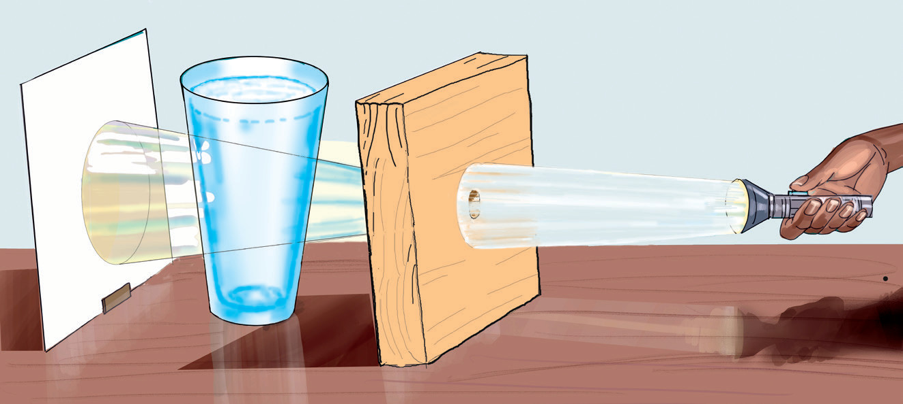

Kazi namba 7: Kuchunguza vitu vinavyopitisha na visivyopitisha mwanga
Mahitaji: Glasi, karatasi ngumu isiyo na tobwe, karatasi ngumu yenye tobwe, kitabu, kurunzi, na maji
Hatua
- 1. Weka glasi iliyojaa maji juu ya dawati.
- 2. Weka karatasi ngumu yenye tobwe mbele ya glasi.
- 3. Weka karatasi ngumu isiyo na tobwe upande wa pili wa glasi.
- 4. Elekeza mwanga wa kurunzi kwenye tobwe. Angalia Kielelezo namba 7.

Kielelezo namba 7: Mwanga wa kurunzi
- 5. Je, unaweza kuona mwanga wa kurunzi katika karatasi ngumu isiyo na tobwe?
Miale ya mwanga imetoka kwenye kurunzi na kupita kwenye tobwe. Kisha miale hiyo hupita kwenye maji na glasi na kutoka nje. Mwanga huweza kupita kwenye baadhi ya vitu kama vile maji na glasi. Mwanga hauwezi kupenya katika baadhi ya vitu kama kitabu na karatasi ngumu.
Tabia za mwanga ni:
(a) Kusafiri katika mstari mnyoofu;
(b) Kuakisiwa; na
(c) Kupinda.
SAYANSI MEMKWA 2.indd 22
21/08/2021 11:22